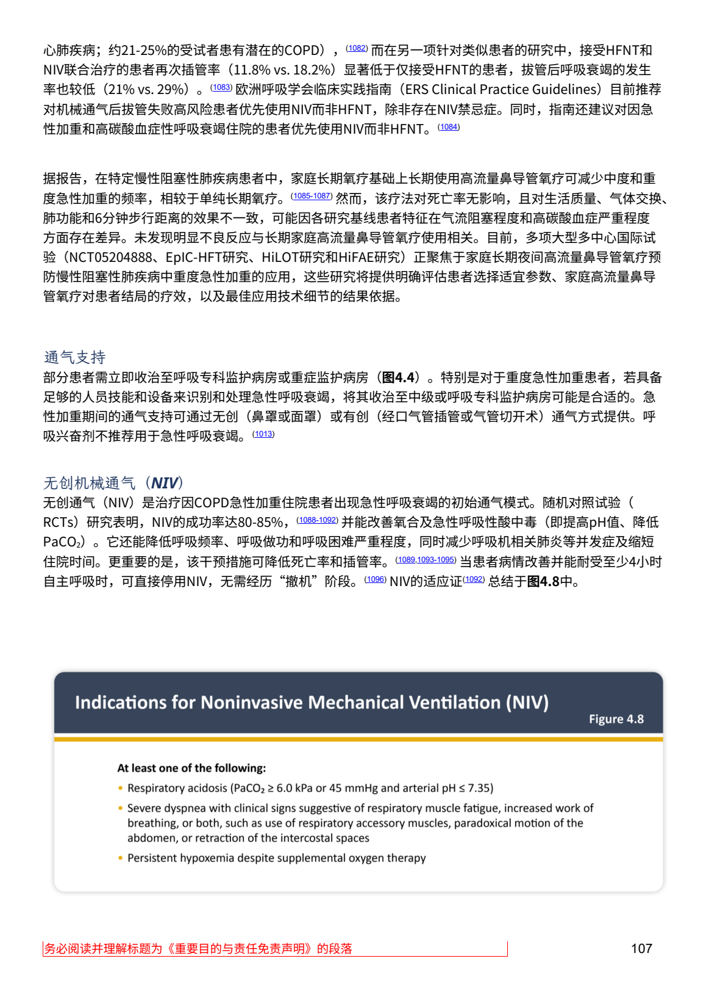
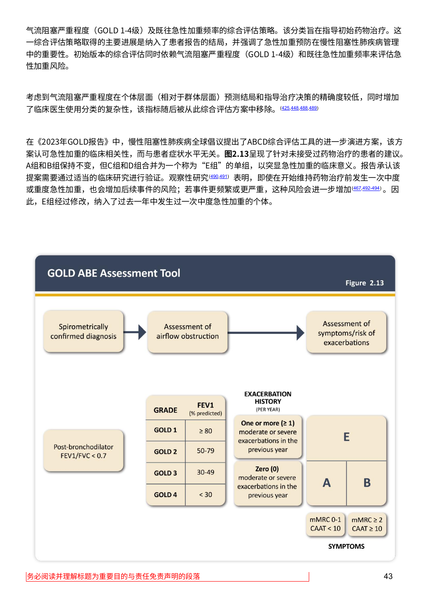
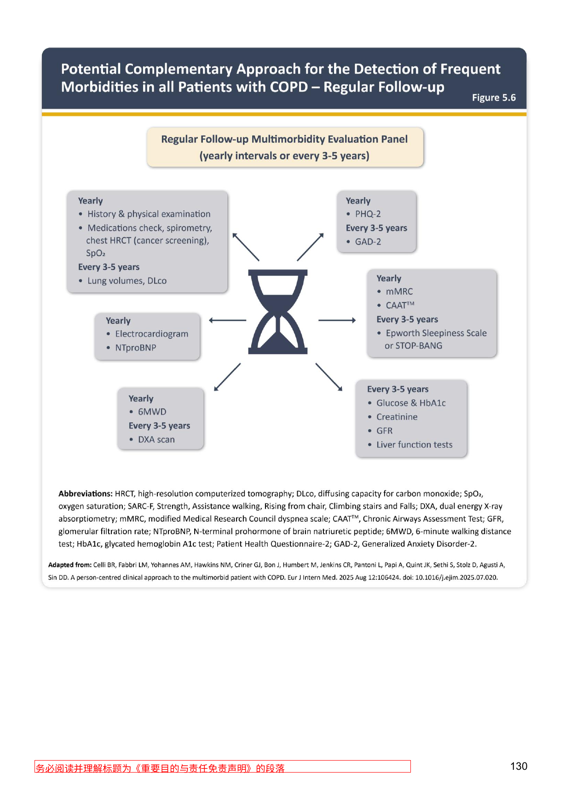
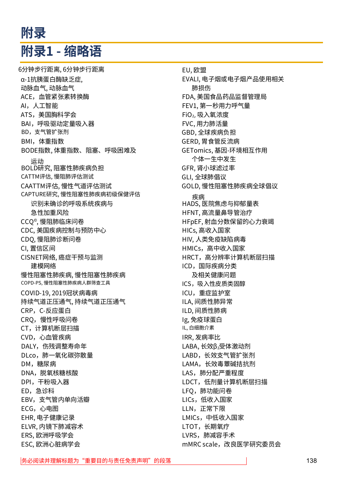
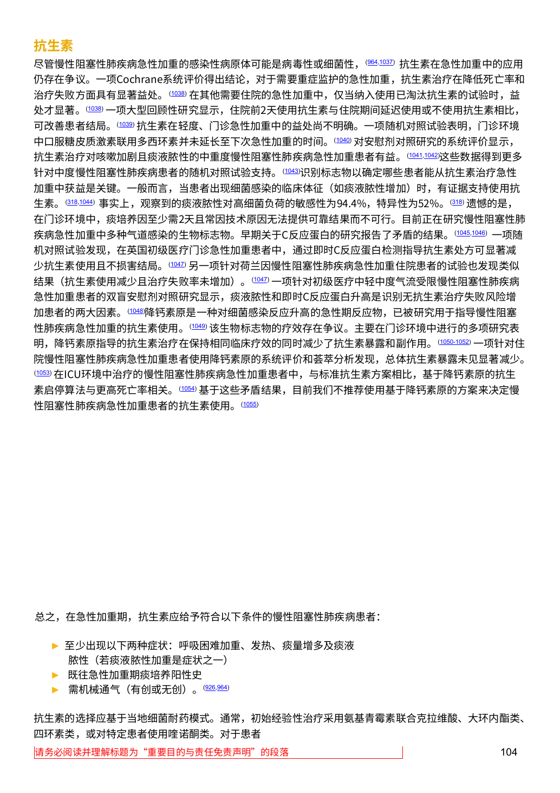
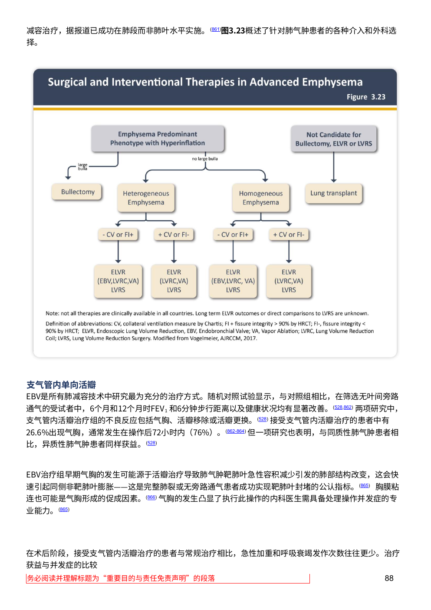

<!doctype html><html lang="zh-CN"><meta charset="utf-8"><meta name="viewport" content="width=device-width,initial-scale=1"><link rel="stylesheet" href="/web/vendor/tabler/tabler.min.css"><title>FactDeck R7 人工裁定对照稿</title><style>body{font:16px/1.55 system-ui,"Microsoft YaHei",sans-serif;max-width:1180px;margin:2em auto;padding:0 20px;color:#172235}h1,h2{color:#243c63}section{border:1px solid #ccd4df;border-radius:10px;padding:18px;margin:22px 0}img{width:100%;height:auto;border:1px solid #ccd4df;border-radius:7px}table{border-collapse:collapse;width:100%;margin:12px 0;font-size:14px}th,td{border:1px solid #cbd3df;padding:8px;text-align:left;vertical-align:top}th{background:#edf1f6}small,.muted{color:#596579}.gate{background:#fff4d8;border-left:5px solid #c38c17;padding:12px}.cols{display:grid;grid-template-columns:1fr 1fr;gap:18px}@media(max-width:800px){.cols{grid-template-columns:1fr}}</style><body class="container-xl py-4"><h1>人工裁定对照稿｜FactDeck R7</h1><p class="gate alert alert-warning"><b>只读对照稿：</b>用于查看原图和建议选项。本页没有保存功能，任何选择都不会被记录；正式裁定请在工作台完成。此稿不代表确认；f048关系、七个异常缩略语、抗生素条件关系及图例转录均保留人工关口。</p>
<section class="card"><h2>S05｜NIV建议承接前句</h2><div class="cols"><div></div><div><p>本次只更正并补入下列完整前句，后面的“同时”住院建议保留。</p><blockquote>欧洲呼吸学会临床实践指南（ERSClinicalPracticeGuidelines）目前推荐
对机械通气后拔管失败高风险患者优先使用NIV而非HFNT，除非存在NIV禁忌症。</blockquote><p>PDF提取包含控制字符和错字。此更正仅覆盖该句话，不确认整页其他内容。原图顶部同时显示前句与后句，可核对人群、比较和NIV禁忌例外。</p><p>正式保存请返回工作台，处理 correction:S05:p16。</p></div></div></section><section class="card"><h2>S03｜图2.13适用范围</h2><div class="cols"><div></div><div><p><b>候选新增引文：</b>“针对未接受过药物治疗的患者的建议”</p><p><b>页面：</b>a_s3_07_15。建议将此句置于表格前，E行仍按原图横向对应。</p><p><b>处理记录：</b>范围句已补入，R6独立复核已有支持证据。此处供查看依据；本项无需另行提交人工裁定。</p></div></div></section>
<section class="card"><h2>S06｜图5.6脚注 PHQ-2 前缀</h2><div class="cols"><div></div><div><p><b>当前来源转录：</b><code>...HbA1c, glycated hemoglobin A1c test; PHQ-2, Patient Health Questionnaire-2; GAD-2...</code></p><p><b>图中可见：</b><code>...HbA1c, glycated hemoglobin A1c test; Patient Health Questionnaire-2; GAD-2...</code></p><p>PHQ-2出现在上方年度检查框，但脚注在Patient Health Questionnaire-2前没有PHQ-2前缀。</p><p><b>请选第二次转录：</b><br><span class='choice'>□ 删除脚注中的“PHQ-2,”前缀（采用上方可见字符串）</span><br><span class='choice'>□ 保留原转录</span><br><span class='choice'>□ 其他修订：</span> ＿＿＿＿＿＿</p></div></div></section>
<section class="card"><h2>S08｜CAT™ / CAAT™ 字形</h2><div class="cols"><div></div><div><p>左栏对应两行，视觉字形为CAT™和CAAT™；R5候选中的CATTM、CAATTM把上标商标符号识别为普通字母。</p><p><b>候选转录：</b>“CAT™评估，慢阻肺评估测试”；“CAAT™评估，慢性气道评估测试”。</p><p><b>请裁定：</b><span class='choice'>□ 两处采用™符号</span>　<span class='choice'>□ 采用其他符号</span> ＿＿＿＿＿＿</p></div></div></section>
<section class="card"><h2>S08｜七处异常缩略语单元</h2><p class="muted">只列原图实际可见内容和异常原因；不根据常识补全。请逐项确认保留、更正或不纳入。</p><table class="table table-vcenter table-striped"><thead><tr><th>单元</th><th>原图可见内容</th><th>待裁定原因</th><th>选择</th></tr></thead><tbody><tr><td>S08:p1:left:01</td><td>6分钟步行距离, 6分钟步行距离</td><td>无缩略语字段；同一中文短语重复。</td><td><span class='choice'>□ 按原样保留</span>　<span class='choice'>□ 人工改正</span>　<span class='choice'>□ 标为不纳入</span></td></tr><tr><td>S08:p1:left:02</td><td>α-1抗胰蛋白酶缺乏症，<br>动脉血气，动脉血气</td><td>可见定义/术语连续两行，但无缩略语字段；“动脉血气”重复，无法确定其对应关系。</td><td><span class='choice'>□ 按原样保留</span>　<span class='choice'>□ 人工改正</span>　<span class='choice'>□ 标为不纳入</span></td></tr><tr><td>S08:p1:left:19</td><td>慢性阻塞性肺疾病，慢性阻塞性肺疾病</td><td>无缩略语字段；定义重复。</td><td><span class='choice'>□ 按原样保留</span>　<span class='choice'>□ 人工改正</span>　<span class='choice'>□ 标为不纳入</span></td></tr><tr><td>S08:p1:left:22</td><td>持续气道正压通气，持续气道正压通气</td><td>无缩略语字段；定义重复。</td><td><span class='choice'>□ 按原样保留</span>　<span class='choice'>□ 人工改正</span>　<span class='choice'>□ 标为不纳入</span></td></tr><tr><td>S08:p1:right:09</td><td>GETomics，基因-环境相互作用<br>个体一生中发生</td><td>可见定义语句似有缺少连接成分或截断；不补全。</td><td><span class='choice'>□ 按原样保留</span>　<span class='choice'>□ 人工改正</span>　<span class='choice'>□ 标为不纳入</span></td></tr><tr><td>S08:p1:right:12</td><td>GOLD，慢性阻塞性肺疾病全球倡议<br>疾病</td><td>条目后另有缩进独立行“疾病”，可能是重复或错位；不将其静默并入定义。</td><td><span class='choice'>□ 按原样保留</span>　<span class='choice'>□ 人工改正</span>　<span class='choice'>□ 标为不纳入</span></td></tr><tr><td>S08:p1:right:39</td><td>mMRC scale，改良医学研究委员会</td><td>定义在可见页内止于“委员会”；未见后续成分。</td><td><span class='choice'>□ 按原样保留</span>　<span class='choice'>□ 人工改正</span>　<span class='choice'>□ 标为不纳入</span></td></tr></tbody></table><p></p></section>
<section class="card"><h2>S05｜抗生素三项条件关系</h2><div class="cols"><div></div><div><p>原文以“符合以下条件”引出三项：至少出现以下两种症状；既往急性加重期痰培养阳性史；需机械通气（有创或无创）。</p><p>原文没有清楚标注三项之间为AND还是OR。候选将关系未明提示移到这组三项旁边，不再置于同页其它卡片上方。</p><p><b>请裁定三项关系：</b><br><span class='choice'>□ AND：三项均需满足</span><br><span class='choice'>□ OR：满足任一项</span><br><span class='choice'>□ 其他：</span> ＿＿＿＿＿＿<br><span class='choice'>□ 保持未知，继续待查</span></p></div></div></section>
<section class="card"><h2>S05｜NIV名称与上下文</h2><p>图中正文小标题写为“无创机械通气（NIV）”。候选在住院情境区将该原文事实放在建议段之前，NIV建议仍逐字引用S05:p16原句。</p><p></p><p class="muted">请在工作台核对此名称与页面范围。图中前置句和“同时”建议保留各自来源语境。</p></section>
<section class="card"><h2>S04｜图3.23全流程关系候选</h2><div class="cols"><div></div><div><p>以下按图中实际文本框与箭头顺序列出。表格是对照建议；所有边均待人工确认，f048目前不代表整图已经确认。</p><p><b>请整体裁定：</b><span class='choice'>□ 接受节点/箭头转录</span>　<span class='choice'>□ 部分修正</span>　<span class='choice'>□ 拒绝采用此图关系</span></p></div></div><h3>节点（框格）</h3><table class="table table-vcenter table-striped"><thead><tr><th>单元</th><th>位置</th><th>逐字建议</th></tr></thead><tbody><tr><td>S04:p39:fig3.23:node01</td><td>upper-left</td><td>Emphysema Predominant Phenotype with Hyperinflation</td></tr><tr><td>S04:p39:fig3.23:node02</td><td>upper-right</td><td>Not Candidate for Bullectomy, ELVR or LVRS</td></tr><tr><td>S04:p39:fig3.23:node03</td><td>left branch terminal</td><td>Bullectomy</td></tr><tr><td>S04:p39:fig3.23:node04</td><td>middle-left branch</td><td>Heterogeneous Emphysema</td></tr><tr><td>S04:p39:fig3.23:node05</td><td>middle-right branch</td><td>Homogeneous Emphysema</td></tr><tr><td>S04:p39:fig3.23:node06</td><td>right branch terminal</td><td>Lung transplant</td></tr><tr><td>S04:p39:fig3.23:node07</td><td>under Heterogeneous Emphysema, left branch condition</td><td>- CV or FI+</td></tr><tr><td>S04:p39:fig3.23:node08</td><td>under Heterogeneous Emphysema, right branch condition</td><td>+ CV or FI-</td></tr><tr><td>S04:p39:fig3.23:node09</td><td>under Homogeneous Emphysema, left branch condition</td><td>- CV or FI+</td></tr><tr><td>S04:p39:fig3.23:node10</td><td>under Homogeneous Emphysema, right branch condition</td><td>+ CV or FI-</td></tr><tr><td>S04:p39:fig3.23:node11</td><td>terminal below Heterogeneous Emphysema / - CV or FI+</td><td>ELVR
(EBV,LVRC,VA)
LVRS</td></tr><tr><td>S04:p39:fig3.23:node12</td><td>terminal below Heterogeneous Emphysema / + CV or FI-</td><td>ELVR
(LVRC,VA)
LVRS</td></tr><tr><td>S04:p39:fig3.23:node13</td><td>terminal below Homogeneous Emphysema / - CV or FI+</td><td>ELVR
(EBV,LVRC, VA)
LVRS</td></tr><tr><td>S04:p39:fig3.23:node14</td><td>terminal below Homogeneous Emphysema / + CV or FI-</td><td>ELVR
(LVRC,VA)
LVRS</td></tr></tbody></table><h3>箭头（逐边）</h3><table class="table table-vcenter table-striped"><thead><tr><th>箭头</th><th>起点</th><th></th><th>终点</th><th>箭头标签</th><th>裁定</th></tr></thead><tbody><tr><td>S04:p39:fig3.23:arrow01</td><td>Emphysema Predominant Phenotype with Hyperinflation</td><td>→</td><td>Bullectomy</td><td>large bulla</td><td><span class='choice'>□ 同意</span>　<span class='choice'>□ 更正</span>　<span class='choice'>□ 需补看</span></td></tr><tr><td>S04:p39:fig3.23:arrow02</td><td>Emphysema Predominant Phenotype with Hyperinflation</td><td>→</td><td>Heterogeneous Emphysema</td><td>no large bulla</td><td><span class='choice'>□ 同意</span>　<span class='choice'>□ 更正</span>　<span class='choice'>□ 需补看</span></td></tr><tr><td>S04:p39:fig3.23:arrow03</td><td>Emphysema Predominant Phenotype with Hyperinflation</td><td>→</td><td>Homogeneous Emphysema</td><td>no large bulla</td><td><span class='choice'>□ 同意</span>　<span class='choice'>□ 更正</span>　<span class='choice'>□ 需补看</span></td></tr><tr><td>S04:p39:fig3.23:arrow04</td><td>Not Candidate for Bullectomy, ELVR or LVRS</td><td>→</td><td>Lung transplant</td><td>（无标签）</td><td><span class='choice'>□ 同意</span>　<span class='choice'>□ 更正</span>　<span class='choice'>□ 需补看</span></td></tr><tr><td>S04:p39:fig3.23:arrow05</td><td>Heterogeneous Emphysema</td><td>→</td><td>- CV or FI+</td><td>（无标签）</td><td><span class='choice'>□ 同意</span>　<span class='choice'>□ 更正</span>　<span class='choice'>□ 需补看</span></td></tr><tr><td>S04:p39:fig3.23:arrow06</td><td>Heterogeneous Emphysema</td><td>→</td><td>+ CV or FI-</td><td>（无标签）</td><td><span class='choice'>□ 同意</span>　<span class='choice'>□ 更正</span>　<span class='choice'>□ 需补看</span></td></tr><tr><td>S04:p39:fig3.23:arrow07</td><td>- CV or FI+</td><td>→</td><td>ELVR (EBV,LVRC,VA); LVRS</td><td>（无标签）</td><td><span class='choice'>□ 同意</span>　<span class='choice'>□ 更正</span>　<span class='choice'>□ 需补看</span></td></tr><tr><td>S04:p39:fig3.23:arrow08</td><td>+ CV or FI-</td><td>→</td><td>ELVR (LVRC,VA); LVRS</td><td>（无标签）</td><td><span class='choice'>□ 同意</span>　<span class='choice'>□ 更正</span>　<span class='choice'>□ 需补看</span></td></tr><tr><td>S04:p39:fig3.23:arrow09</td><td>Homogeneous Emphysema</td><td>→</td><td>- CV or FI+</td><td>（无标签）</td><td><span class='choice'>□ 同意</span>　<span class='choice'>□ 更正</span>　<span class='choice'>□ 需补看</span></td></tr><tr><td>S04:p39:fig3.23:arrow10</td><td>Homogeneous Emphysema</td><td>→</td><td>+ CV or FI-</td><td>（无标签）</td><td><span class='choice'>□ 同意</span>　<span class='choice'>□ 更正</span>　<span class='choice'>□ 需补看</span></td></tr><tr><td>S04:p39:fig3.23:arrow11</td><td>- CV or FI+</td><td>→</td><td>ELVR (EBV,LVRC, VA); LVRS</td><td>（无标签）</td><td><span class='choice'>□ 同意</span>　<span class='choice'>□ 更正</span>　<span class='choice'>□ 需补看</span></td></tr><tr><td>S04:p39:fig3.23:arrow12</td><td>+ CV or FI-</td><td>→</td><td>ELVR (LVRC,VA); LVRS</td><td>（无标签）</td><td><span class='choice'>□ 同意</span>　<span class='choice'>□ 更正</span>　<span class='choice'>□ 需补看</span></td></tr></tbody></table><h3>图下注释与限制</h3><ul><li>Note: not all therapies are clinically available in all countries. Long term ELVR outcomes or direct comparisons to LVRS are unknown.</li><li>图中的“no large bulla”出现在分支前共用连线上；两条向异质/均质肺气肿的边共享此标签。</li><li>箭头表达的是图示路线；本稿不将其解释为临床推荐的完整适应症标准。</li></ul></section>
<footer><p class="muted">原图均为工作区本地副本。本页是静态只读对照稿，没有保存功能；请在工作台提交正式裁定。文件生成者：Codex-Luna-DECK-R6-20261010。</p></footer><p><a class="btn btn-primary" href="/#/w/deck_5a725e2d98854c81abd3/confirm">返回工作台记录确认与裁定</a></p></body></html>